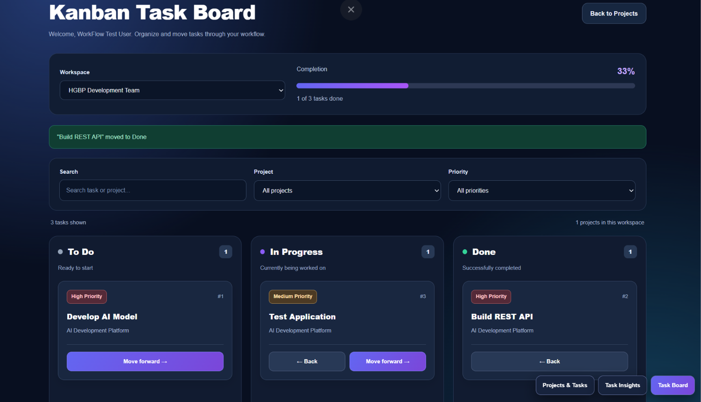

WorkFlow Pro.
A live full-stack workspace and task management platform built around authentication, protected API communication, persistent cloud data and repeatable engineering tests.
- Application
- Workspaces & tasks
- Runtime
- Vercel + Neon
- Deployment
- Public demo
- Verification
- CI & core cloud workflows
Managing work requires more than a task list.
WorkFlow Pro helps users organize workspaces, projects, task priorities and progress. The application began as an isolated Docker environment and now runs publicly on Vercel with Neon PostgreSQL.
Account flows
Registration and sign-in verified through the hosted application.
Workspace workflows
Create projects, manage tasks and move work through the Kanban board.
Persistent data
Cloud PostgreSQL stores application data; isolated Docker persistence is also tested in CI.
A working public application.
The screenshot below was captured from the deployed application with sample tasks across three workflow stages. One of three tasks is complete, giving 33% completion.

Connected cloud services, protected API boundaries.
The public Next.js frontend forwards approved requests to a separately deployed Express backend using a private server-side proxy key. Prisma connects the backend to Neon PostgreSQL through an encrypted connection.
The earlier Docker Compose environment remains useful for isolated development and CI. It is not the public hosting configuration.
Read cloud deployment documentation ↗Building confidence beyond the happy path.
Origin and request boundaries
The Next.js proxy validates the browser origin before forwarding requests internally. The documented Docker fix keeps origin checks and CSRF protections in place rather than disabling them to resolve an integration problem.
Disposable environments, persistent test data
Docker Compose creates a separate database for local testing. A named volume retains account and workspace data when containers stop and restart. The development setup intentionally avoids importing real personal data.
Safe credential handling
Local environment values stay outside version control. CI generates a fresh password for its temporary PostgreSQL instance, avoiding dependence on the developer's own database or secrets.
Reproducible integration
Automated checks build the frontend and backend, bring up an isolated Docker stack, test HTTP security boundaries and verify that database state survives a restart.
Tests are part of the project story.
The documented GitHub Actions workflow runs on pushes and pull requests to main. The source-quality and isolated Docker integration jobs were observed passing during development; the live Actions page is the source of truth for the current status.
Frontend ESLint and production build, backend TypeScript checks and Prisma client generation.
Frontend reachability, anonymous-access protections and browser-origin handling.
CI writes a marker in an isolated PostgreSQL instance, restarts the stack and checks that the marker remains.
The repository includes additional test files for authentication, access, CSRF, roles, membership, API behavior and task writes. Their presence is not a claim that every individual suite is run by the published CI workflow.
Public demonstration, ongoing hardening.
The frontend and backend are deployed. Cloud migrations, API health, registration, login, workspace and project creation, and task status updates were verified. Direct unauthorized backend requests were blocked. A second account displayed an empty workspace dashboard.
Authenticated cross-account API authorization and further security verification remain pending. This is a portfolio demonstration, not a security-audited enterprise service. Use sample data rather than confidential information.
Working cloud deployment, core browser workflows and genuine screenshots.
Authenticated access controls, collaboration and session behavior.
Review monitoring, backups, abuse prevention and operational reliability.